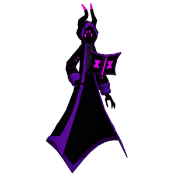

Despair
背景

人们讲述着一位名为“Confidence”的大法师，他被自己的力量蒙蔽了双眼。蒙蔽深到最终不可避免地导致他的灭亡，并永远折磨着他。或者说，人们原本是这么以为的。
为了保护他们的世界和所爱之人，Confidence 最亲近的亲属“Optimism”将他放逐到另一个现实领域，把他隔绝在完全的黑暗中。Confidence 在自己的维度中变得绝望，仇恨在心中沸腾，但同时他发现了某种东西。某种有用的东西。
他可以通过他人情绪的本质显化自己的奥术能量，也包括自己的情绪。
突破被隔绝的维度后，他开始以反对者为燃料，毁灭无数世界与领域。最终，也包括他自己的世界。幸存下来讲述这个故事的人拒绝再称呼他的原名。有些人称他为“Harbinger of the Hopeless”。另一些人称他为 Despair。
“我害怕这一天会成为现实，但我拒绝去看。我太爱他了，不愿相信这样的命运会发生。但力量总会蒙蔽那些渴求更多力量的人。发生的一切是我有责任去修正的事，我承担其中每一丝责任。对不起，兄弟，我没能更早照看你……” ~ Optimism
策略
Despair 的战斗由两个不同阶段组成。
第一阶段中，他用雷击和光束攻击对手，偶尔会向侧方闪避以保持距离。被击败后，他会进入第二阶段，拥有更强力的攻击。更大的光束、雷击，以及一个非常巨大且强力的 AoE 爆破，这个爆破有概率触发两次，从而让对手措手不及。
统计
基础 HP：15000
伤害：物理和电击
| 属性 | 抗性 |
|---|---|
| 物理 | 中性 (1x) |
| 火焰 | 弱点 (1.15x) |
| 冰霜 | 弱点 (1.25x) |
| 电击 | 抗性 (0.7x) |
| 光耀 | 弱点 (1.25x) |
| 暗影 | 抗性 (0.85x) |
| 毒 | 弱点 (1.1x) |